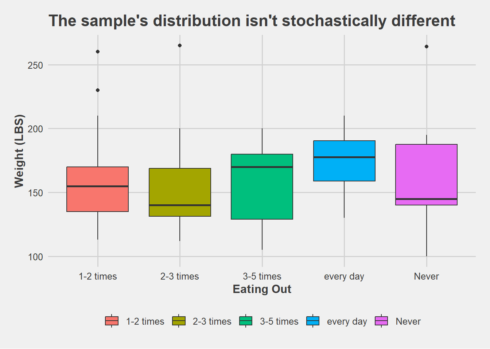

# From your file menu (at the top of R-Studio) select:
# "Session -> Set working directory -> To source file location"
# Then play this chunk to get the data into R.
library(mosaic)
library(car)
library(DT)
library(pander)
library(readr)
library(ggthemes)
food <- read_csv("C://Users/Alex/Documents/GitHub/IntStats/Statistics-Notebook-master/Data/food.csv") #food.csv is in the Data folder...Food at College
Background
After taking a look at the data, I saw the presence of an weight column along with a eating out column. Then I wondered, is there at least one “weight” distribution of people with distinct “eating out” habits is stochastically different? Since I wanted to find out specifically if the subjects present in the data are affected by eating habits.
\[ H0: \text{All group samples are from the same distribution} \]
\[ Ha: \text{At least one group sample's distribution is stochastically different} \]
\[ Alpha = \text{0.05} \]
Analysis
Since we are comparing distributions among non-parmetric groups, a Kruskal-Wallis Rank Sum Test must be performed to since the data isn’t normal.
food$weight <- as.numeric(food$weight)
ggplot(food, mapping = aes(x = eating_out, y = weight, fill = eating_out)) +
geom_boxplot() +
theme_fivethirtyeight() +
labs(title = "The sample's distribution isn't stochastically different",
x = "Eating Out",
y = "Weight (LBS)") +
theme(axis.title = element_text(size = 12, face = "bold"),
legend.title = element_blank(),
title = element_text(size = 11, face = "bold"))
pander(favstats(weight ~ eating_out, data=food))| eating_out | min | Q1 | median | Q3 | max | mean | sd | n | missing |
|---|---|---|---|---|---|---|---|---|---|
| 1-2 times | 113 | 135 | 155 | 170 | 260 | 157.6 | 29.23 | 58 | 2 |
| 2-3 times | 112 | 131.2 | 140 | 168.8 | 265 | 153 | 35.79 | 22 | 2 |
| 3-5 times | 105 | 129 | 170 | 180 | 200 | 157.5 | 29.33 | 13 | 0 |
| every day | 130 | 159 | 177.5 | 190.5 | 210 | 172.4 | 26.5 | 12 | 0 |
| Never | 100 | 140 | 145 | 187.5 | 264 | 159.9 | 40.79 | 15 | 1 |
pander(kruskal.test(weight ~ eating_out, data=food))| Test statistic | df | P value |
|---|---|---|
| 5.082 | 4 | 0.279 |
Interpretation
Starting with the favstats, is evident that eating out groups do have some variance among weight values. For example the Q1 of people eating “3-5 times” is 129, whereas the “everyday” group have Q1 of 159 lbs, implying that there are groups that differ 30 lbs in the lower quartiles. This variance explains the average spread of weight values through groups, to see the distribution of the data throught the analysis. Additionally, people that eat out every day have a higher mean than other groups, with 172.4 lbs mean compared to an moderate 1-2 time group with 157.6 lbs average.
But at the end of the day the Kruskal-Wallis Rank Sum compares the ranks given to each subject wand is compared to our given alpha. Of which we receive a P-value of 0.279 which is bigger than our alpha of 0.05. Therefore, failing to reject the null and conclude that least one “weight” distribution of people with distinct “eating out” habits is stochastically different. “stochastically” meaning that the results have a random chance of being different in the context of the analysis, since the data is assumed to be “non-parametric”.
Credits/References
This analysis fully abstained from using AI, the only references used were the “Pig Birth Weights – Kruskal-Wallis” from the “Statistics Notebook” guide given by the course.